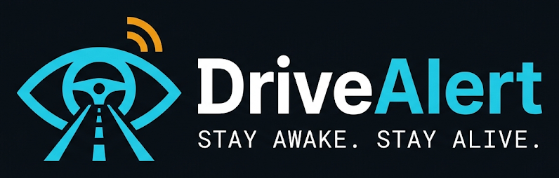

Real-time drowsiness detectionSTAY AWAKE.
STAY ALIVE.
AI-powered driver drowsiness detection using your laptop webcam and computer vision. It tracks eye closure, yawning and head nods in real time and sounds an alarm before a microsleep turns into an accident.
Measured live per frame
Train the model to see this
Frames processed on your machine, never stored
Precision Biometric Indicators
Three fatigue signs extracted from facial landmarks on every frame, combined into one fatigue score.
Eye Closure Tracking
Eye Aspect Ratio from MediaPipe's facial landmarks, fused with a MobileNetV2 eye-state CNN. Short blinks are counted separately from long closures, which trigger the alarm.
Yawn Detection
Mouth Aspect Ratio tracks how wide and how long the mouth stays open. Yawns in the last 5 minutes raise the fatigue score.
Head Nod Detection
Head pose estimated from 6 landmarks with OpenCV solvePnP. A sustained drop from your calibrated neutral position signals loss of alertness.
How DriveAlert Works
Four stages run on every frame, about 10 times a second.
Camera Feed
The browser captures webcam frames and streams them to the local Python server over a WebSocket.
Face Landmarks
MediaPipe Face Mesh finds 468 facial points, then eye, mouth and head-pose measurements are computed.
AI Analysis
MobileNetV2 CNNs classify eye state and yawning; results are fused with EAR, MAR, PERCLOS and head pose into a 0–100 fatigue score.
Alarm & Intervention
A sound and full-screen alert fire if eyes stay closed too long, the head drops, or the fatigue score gets too high.
Smart Safety Features
Inspired by in-transit safety and fleet telematics blueprints, and by EU driver-monitoring rules (DDAW drowsiness warning and ADDW distraction warning).
Start driver monitoring in seconds.
Open DriveAlert in Chrome, Edge or Firefox, allow the camera, look ahead for 3 seconds to calibrate, and you're protected.
The Drowsy Driving Problem
Figures from government agencies, the WHO and peer-reviewed studies, and how each real-world finding shaped a feature of DriveAlert. Every number links to its source.
Over 3,200 per day; leading cause of death for ages 5–29. WHO, 2023 ↗
→ DriveAlert: Real-time alerts before a crashDashboard ›From 4,80,583 accidents – about 20 deaths every hour. MoRTH, 2023 ↗
→ DriveAlert: Zero-cost software: any laptop/phone camera, works offlineModel ›Highways carry 31% of accidents but over a third of deaths – long, monotonous drives. MoRTH via DT Next ↗
→ DriveAlert: Break reminders, time-on-task factor, rest-stop finderRest Stops ›South-East Asia alone accounts for 28% of global road deaths. WHO, 2023 ↗
→ DriveAlert: No special hardware; compact TFLite model built for low-cost devices like a Raspberry PiModel ›21% directly sleep-related, another 26% due to extreme fatigue – AIIMS Rishikesh study of 1,200 victims. Loktej ↗
→ DriveAlert: EAR + CNN eye-closure, PERCLOS, yawn & nod detectionDashboard ›About 29,800 deaths in 2017–2021. AAA Foundation ↗
→ DriveAlert: Microsleep alarm in 1.5 s, escalating to a sirenDashboard ›Drowsiness may contribute to about 21% of fatal crashes. NHTSA ↗
→ DriveAlert: L1 early warning + fatigue forecast before a microsleepDashboard ›Experience fatigue or lack of sleep during journeys; no duty-hour limits or real-time fatigue checks. The Hitavada ↗
→ DriveAlert: Emergency contact alert, trip reports, KSS self-ratingTrip Reports ›Police records show only ~800 US drowsy deaths a year; research finds the real share is many times higher. Drivers rarely admit dozing. AAA ↗ NHTSA ↗
→ DriveAlert: Every alarm logged with time, location and outcomeHistory ›68% of sleep-related crashes in the AIIMS study were on straight, ordinary roads, mostly in the evening. Loktej ↗
→ DriveAlert: Night mode + time-of-day risk + monotony (time-on-task)Settings ›IIT Bombay simulator study: under 5 h of sleep slows braking response; alertness dips in these windows. Mumbai Live ↗
→ DriveAlert: Sensitivity ×1.25 at 1–5 AM, ×1.1 at 2–4 PMSettings ›Driver drowsiness detection and alert systems become mandatory. Global NCAP ↗
→ DriveAlert: Low-cost retrofit for trucks before the 2028 mandateModel ›Mandatory for new models from July 2024 and all new vehicles from July 2026. Smart Eye ↗
→ DriveAlert: Looking-away / face-lost distraction alarmDashboard ›Warning may start at KSS 7 and must be given at KSS 8 and above. Optalert ↗
→ DriveAlert: KSS rating + estimated KSS; L1 ≈ KSS 7, L2 ≈ KSS 8+Trip Reports ›Real-world problems → technical weakness → our solution
| Real-world finding | Weakness of a basic webcam system | DriveAlert solution | Status |
|---|---|---|---|
| Drowsy crashes are under-reported | No evidence of what happened | Automatic event log with time, location, fatigue score and how each alarm ended; trip reports | ✅ |
| Crashes peak 6 PM–midnight; alertness dips 1–5 AM & 2–4 PM | Treats every hour the same | Time-of-day risk factor (×1.25 at night, ×1.1 afternoon/evening) | ✅ |
| Night driving | Normal webcam cannot see in the dark | Night mode (CLAHE) for dim light; infrared eye model (MRL IR dataset) auto-used with an IR camera; in total darkness: “too dark” alert, voice check-ins and gyroscope swerve detection instead of false alarms. IR camera + 850 nm LEDs for full vision | ✅ / 🔧 |
| 68% on straight, monotonous roads | No idea how long you have driven or if the car is moving | Time-on-task factor after 90 min, break reminders, GPS speed gating (no alarms when parked) | ✅ |
| Microsleep at 100 km/h ≈ 28 m per second blind | Only reacts after the eyes are closed | Predictive fatigue trend: warns “likely drowsy in X min”; L1 early warning; 3-level escalating alarm | ✅ |
| Sunglasses, glasses, masks, varied faces | Hidden eyes cause false or missed alarms; small dataset | “Eyes not visible” fallback to head pose + yawning; per-condition evaluation (evaluate.py); Grad-CAM | ✅ |
| Drivers switch off annoying systems | Fixed thresholds → false alarms | Personal calibration + “False alarm” button that learns per-driver thresholds; false alarms/hour metric | ✅ |
| Looking at phone / away from road (EU ADDW) | Only drowsiness checked | Distraction alarm from head yaw or face lost + phone-in-hand detection (EfficientDet-Lite0 / YOLOv8n, COCO “cell phone”) | ✅ |
| 58% of commercial drivers fatigued, no duty limits | Nobody is told during a risky trip | Emergency Telegram alert with live location; KSS self-rating; Fleet Manager page with daily duty-hour limit and per-driver safety score | ✅ |
| Slow help after a crash | No crash awareness | Phone accelerometer crash detection → 30 s “Are you OK?” → automatic emergency alert with location | ✅ |
| Driver may not hear alarms | Sound only | Voice + escalating siren + flashing screen. Seat/steering vibration motor (Arduino) | ✅ / 🔧 |
| Laptop is impractical in a car; patchy internet | Needs a PC and a server | Detection works fully offline; installable mobile app (PWA); TFLite int8 model + Raspberry Pi script with buzzer/vibration. GSM SMS fallback | ✅ / 🔧 |
| Privacy concerns with an in-cabin camera | Video could be misused | All processing local; no video stored or uploaded; secrets never sent to the browser. Auto-delete retention setting | ✅ / 🧭 |
| Drowsiness builds up over seconds, not in one frame | Single-image models miss slow blinks and drooping | Temporal LSTM / GRU / BiLSTM / 1D-CNN on 3-second sequences of 8 signals, blended into the fatigue score | ✅ |
| Alcohol involved in 32% (AIIMS) | Cannot detect intoxication | Out of scope for vision – MQ-3 alcohol sensor before trip start | 🔧 |
How DriveAlert compares with existing approaches
BY CATEGORYCompared by type of product, not by brand. Features of individual products vary – check each one before quoting it.
| Capability | Built-in car systems (OEM) | Aftermarket DMS camera | Basic phone / webcam apps | DriveAlert |
|---|---|---|---|---|
| Works in any (older) vehicle | ✗ new cars only | ✓ | ✓ | ✓ |
| Extra hardware cost | Part of car price | Device purchase | None | None (webcam / phone) |
| Signals used | Often steering pattern; camera in newer models | Camera (often infrared) | Usually eyes only | Eyes, yawns, head pose, gaze, phone, time-of-day, time-on-task |
| Escalating alarm + voice | Chime + icon | Beep | Beep | 3 levels, voice in English / Hindi / Punjabi |
| Learns the individual driver | Rarely | Rarely | ✗ | ✓ calibration + false-alarm learning |
| Emergency contact + crash alert | Some (eCall in EU) | Some via subscription | ✗ | ✓ Telegram with live location |
| Fleet duty-hour view | ✗ | Paid cloud | ✗ | ✓ Fleet Manager page + AI questions |
| Open, explainable model | ✗ closed | ✗ closed | Rarely | ✓ metrics, confusion matrix, Grad-CAM, 20+ models compared |
| Infrared night vision | ✓ (camera systems) | ✓ usually | ✗ | Partial – CLAHE night mode; IR camera on Raspberry Pi |
| Certified to EU / AIS standards | ✓ | Some | ✗ | ✗ student prototype |
Note: the AIIMS study covers one state (Uttarakhand) and the US figures are statistical estimates, not police counts.
Driver Vigilance Dashboard
Real-time eye, mouth and head-pose analysis. Keep your face centred in the frame with good lighting.
Camera is off.
Press Start Monitoring to begin, or Simulate Drowsiness for a demo.
Live Fatigue Score Telemetry WINDOW: 60 SECONDS
Fatigue Score Breakdown
CNN —Score = 50 × PERCLOS/30% + 25 × yawns/3 + 25 × nods/3 (each capped). A continuous eye closure overrides this and drives the score straight towards 100.
Live Event Feed
Full log →Driver Telemetry & Alarm Log
Review safety incidents, microsleep episodes and fatigue progression. Critical events are alarms; warnings are early signs such as yawns.
No alarms recorded
—
Start monitoring to measure
0 frames evaluated
| Timestamp | Event trigger / reason | Fatigue score | PERCLOS | EAR | Yawns (5m) | Status / action |
|---|---|---|---|---|---|---|
| No events yet. Stay safe! | ||||||
Trigger Distribution
Safety Recommendation
Trip Reports
Every monitoring session longer than 10 seconds is saved as a trip. Select one to see its fatigue timeline and a plain-English report; use AI for a written summary.
Nearby Rest Stops
Fuel stations, cafés, restaurants, dhabas and rest areas near you, from OpenStreetMap. The search widens automatically (up to 100 km) until places are found. A 15–20 minute break is the most effective fix for drowsiness.
Closest places
OPENSTREETMAPFleet Manager
Every driver's trips, driving hours today against the daily duty limit, alarms per hour and a safety score. Built for the 58% of commercial drivers who drive fatigued with no one watching their hours.
with at least one saved trip
monitoring sessions > 10 s
total across all drivers
hours per driver per day (Settings)
🏁 Driver safety leaderboard
SAFETY = 100 − ALARMS/HOUR×8 − FATIGUE×0.4| # | Driver | Safety score | Today vs limit | Trips | Hours | Alarms / h | Avg fatigue | End KSS | Top alarm | |
|---|---|---|---|---|---|---|---|---|---|---|
| Loading… | ||||||||||
✨ Ask the fleet data
GEMINIAsk in plain English, e.g. “Which driver had the most eyes-closed alarms this week?” or “Who should not drive tonight?”. Answers use only your saved trip data.
User Study (SUS)
Let 10 or more people try DriveAlert, then fill in this standard 10-question survey (Brooke, 1996). Scores run 0–100; the published average is 68.
participants so far
standard deviation —
≥85 Excellent · ≥72 Good · ≥52 OK
above or below the benchmark
📝 Survey
1 = STRONGLY DISAGREE · 5 = STRONGLY AGREE📊 Average answer per question
ODD = POSITIVE · EVEN = NEGATIVEResponses
| When | Name | Role | Score | Grade | Comment |
|---|---|---|---|---|---|
| No responses yet. | |||||
Settings
Changes apply to live sessions immediately after saving.
🗣️ Voice, breaks & location
SAVED IN THIS BROWSER📲 Emergency contact alert
OFFWhen the driver gets repeated alarms, a Telegram message with the live location is sent to a family member or fleet manager. Setup: in Telegram, message @BotFather → /newbot to get a bot token; the contact then sends any message to the bot, and you get their chat ID from @userinfobot.
🧠 Adaptive learning
—When you press False alarm, DriveAlert makes that type of alarm slightly harder to trigger for this driver (e.g. +0.25 s eye-closure time). Learned values are saved per driver name.
✨ AI trip reports (optional)
RULE-BASED ONLYTrip reports always work without AI. Add a free Google Gemini API key (from aistudio.google.com) to also get a written AI summary. The key is stored only on your server and never sent back to the browser.
Model Architecture & Performance Benchmark
Technical documentation of the MobileNetV2 transfer-learning classifiers and the real-time landmark fusion pipeline. All numbers below come from your own training run on the held-out test set.
Overall correct predictions on the test split
Of all frames flagged drowsy, how many really were – fewer false alarms
Of all real drowsy cases, how many were caught – fewer missed microsleeps
Balance of precision and recall · ROC-AUC —
Classical ML vs Deep Learning
RUN train_classical.pyEleven syllabus models – Logistic Regression, KNN, SVM, Decision Tree, Random Forest, Naive Bayes, Gradient Boosting, AdaBoost, Extra Trees, MLP (ANN) and LDA, plus XGBoost if installed – trained on HOG features of the same images and the same test split as the CNN. The best one can be used live (Settings → Eye-state model).
| Model | Type | Accuracy | Precision | Recall | F1 | ROC-AUC | 5-fold CV | ms / image | Size |
|---|---|---|---|---|---|---|---|---|---|
| No classical results yet. Run python train_classical.py --task both (or the Kaggle notebook cell) and refresh. | |||||||||
Deep learning architectures (CNN)
RUN train_dl_compare.pyFive CNNs trained on the same images and the same split: a Custom CNN from scratch, and transfer learning with MobileNetV2, EfficientNetB0, ResNet50V2 and DenseNet121 (ImageNet weights, then fine-tuned). Shows the accuracy vs speed vs size trade-off.
| Architecture | Accuracy | Precision | Recall | F1 | ROC-AUC | Parameters | Size | ms / image | Train time |
|---|---|---|---|---|---|---|---|---|---|
| No CNN comparison yet. Run python train_dl_compare.py --task both (or the Kaggle notebook cell) and refresh. | |||||||||
Temporal sequence models (RNN)
RUN train_temporal.pyLSTM, GRU, Bidirectional LSTM and a 1D-CNN read 3-second windows (30 frames × 8 signals: EAR ratio, MAR, pitch, yaw, roll, eyes closed, yawning, face found) and predict drowsy vs alert for the whole window. A Random Forest on window statistics is the classical baseline. Trained on UTA-RLDD videos, split by video so no person-clip appears in both train and test.
| Model | Type | Accuracy | Precision | Recall | F1 | ROC-AUC | Parameters | ms / window |
|---|---|---|---|---|---|---|---|---|
| No sequence models yet. Run python train_temporal.py --rldd PATH and refresh. | ||||||||
Research rigour: is the difference real?
RUN significance.pyEvery model is tested on the same held-out images. The 95% confidence interval comes from 1,000 bootstrap resamples; McNemar's exact test checks whether a model is significantly different from the main CNN (p < 0.05).
| Model | Accuracy (95% CI) | F1 (95% CI) | Only CNN right | Only this right | McNemar p | Significant? |
|---|---|---|---|---|---|---|
| Run python significance.py --task eye after training, then refresh. | ||||||
🎯 Fusion & alarm timing – tuned on real clips
RUN tune_fusion.py🔍 Failure analysis
RUN failure_gallery.pyNight vision: day model vs infrared model
RUN train_night.pyA normal webcam sees nothing in a dark car, so night systems use infrared LEDs and an IR camera, which give grey images. This compares the day CNN (colour Kaggle images) with a CNN trained on the MRL Eye Dataset (84,898 infrared eye images, 37 people, 3 IR sensors) on the same infrared test images. The night model is used automatically when the camera image is infrared or dark.
| Model | Accuracy | Precision | Recall | F1 | ROC-AUC |
|---|---|---|---|---|---|
| No night model yet. Run python train_night.py --data-dir PATH_TO_MRL and refresh. | |||||
CLAHE night mode brightens the frame automatically.
Detected from the grey image → night IR eye model.
“Too dark” alert, voice check-ins every few minutes, gyroscope swerve detection – no false “eyes on road” alarms.
End-to-End Real-Time Computer Vision Pipeline
PIPELINE LATENCY: — msRaw Frame
Browser grabs a webcam frame, resizes to 640 px wide and encodes as JPEG (q = 0.7).
→ base64 over WebSocketMediaPipe Face Mesh
Detects the face and 468 3D landmarks with iris refinement; one face tracked.
→ 478 × (x, y) pointsGeometry
EAR from 6 points per eye, MAR from 3 mouth pairs, head pitch/yaw/roll via solvePnP.
→ EAR, MAR, poseMobileNetV2 CNNs
Eye crops (96 px) → P(closed); face crop (128 px) → P(yawn).
→ class probabilitiesSignal Fusion
Eyes closed if 0.6·P(closed) + 0.4·[EAR < threshold] ≥ 0.5; yawn if MAR high or P(yawn) > 0.85.
→ per-frame statesTemporal Buffer
Timers for closure, yawn and tilt; 60 s PERCLOS window; 5 min yawn and nod counts.
→ fatigue score 0–100Alarm Engine
Alarm on long closure, sustained head drop or high score; event logged with how it ended.
→ sound + overlay + logConfusion Matrix Verification
TEST SETActually drowsy, predicted drowsy
Actually alert, flagged drowsy (false alarm)
Actually drowsy, missed as alert (most dangerous)
Actually alert, predicted alert
Training & Validation Convergence
Training Dataset & Benchmarking Specs
— SAMPLESKaggle Yawn-Eye Dataset serenaraju/yawn-eye-dataset-new
Eye crops labelled Open / Closed and face images labelled yawn / no_yawn, with varied people, lighting and glasses. Stratified random split, seed 42.
Deployment Footprint
Measured from the trained model files on this server.